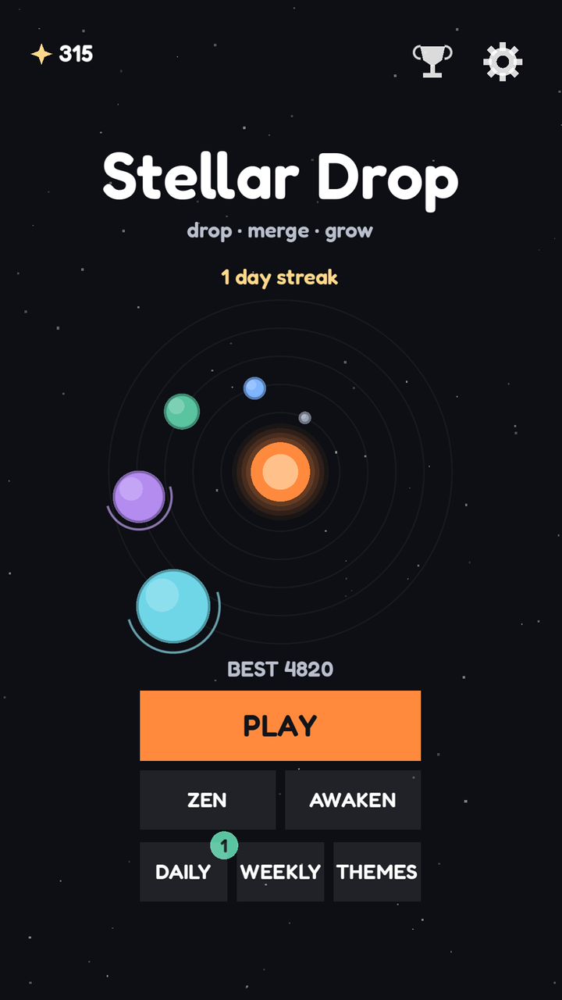
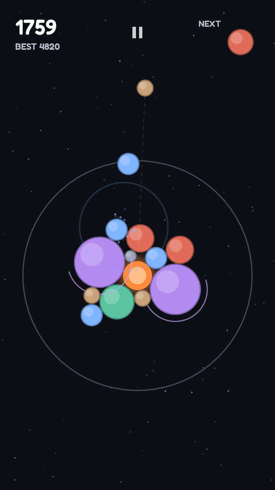
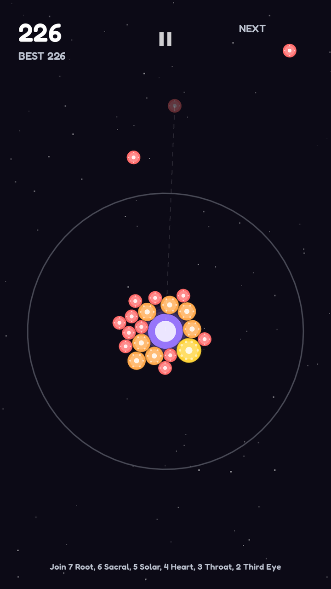

Puzzle · Android
Stellar Drop
Drop planets into orbit around a glowing star. Match two of a kind and they merge into something bigger, from dust and rock all the way to a new sun. Keep everything inside the ring.



Features
- Real orbital physicsAim, throw and watch planets swing around the star. Heavier worlds move slower.
- Ten planets to discoverMerge your way up to a Sun, then join two Suns for a supernova.
- Awakening modeA hard mode with seven chakra spheres: gather seven to rise one level.
- Zen and weekly challengesPlay with no game over, or try a new rule every Monday.
- Daily missions and streaksFresh goals every day, stardust rewards and twelve achievements.
- Seven themesDeep Space, Aurora, Dusk, Frost, Forge, Solar System and Chakra.
- English and TurkishThe game follows your device language.